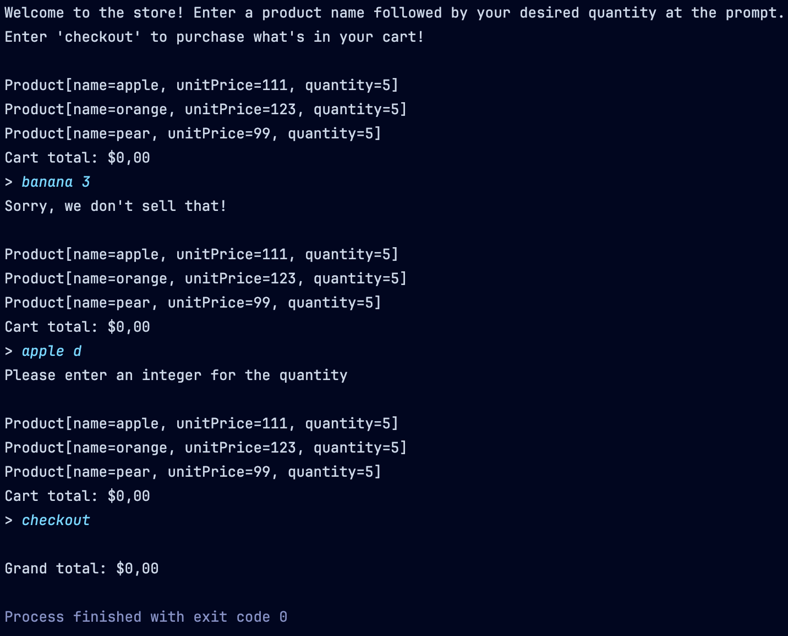

In this project, you’ll make a basic console application modeling a
store. You’ll write a Store class to model the store and a
Product class to model each product sold. However, instead
of writing a regular class for Product, you’re going to
learn how to write a record which will simplify things. You’re
also going to practice handling bad input.
Complete the following tasks to complete the project! Example output is shown below, including output for cases where bad input is encountered.
- Write a
Productrecord with instance variablesname,unitPrice, andquantity. This record should have a method to facilitate creating new records with adjusted quantities - Write a
Storeclass with instance variablesapple,orange, andpear. Each instance variable will be of typeProduct:- Write a constructor which accepts the unit prices for each product
and creates
Productinstances for each product - Override the
toStringmethod to display the products - Write a
receivemethod which accepts a product name and a quantity. This method should increase the quantity for the received product. If the product name is invalid, or if the quantity is below one, an exception should be thrown - Write a
sellmethod which accepts a product name and a quantity. This method should decrease the quantity for the received product if the quantity is less than or equal to the current quantity for the given product and return the total cost for the products purchased. If the store has insufficient stock, -1 should be returned. If the product name is invalid, or if the quantity is below one, an exception should be thrown
- Write a constructor which accepts the unit prices for each product
and creates
 Example output for good input
Example output for good input
 Example output for bad input